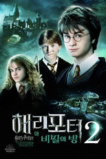
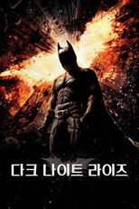

웨이브 전체1,295편 중 인기 60편
순서는 TMDB 인기도입니다 — 넷플릭스 외 서비스는 공식 순위를 공개하지 않습니다. 제공처는 JustWatch 자료(2026-09-21 확인)이며 가입 전 서비스에서 최종 확인하세요.
1 라디오스타시리즈 · 2007 · 예능 · 왓챠, 티빙에도제공처 ↗2
라디오스타시리즈 · 2007 · 예능 · 왓챠, 티빙에도제공처 ↗2 아는 형님시리즈 · 2015 · 예능 · 코미디 · 왓챠, 티빙에도제공처 ↗3
아는 형님시리즈 · 2015 · 예능 · 코미디 · 왓챠, 티빙에도제공처 ↗3 루키 The Rookie시리즈 · 2018 · 범죄 · 드라마 · 넷플릭스, 왓챠, 티빙에도제공처 ↗4
루키 The Rookie시리즈 · 2018 · 범죄 · 드라마 · 넷플릭스, 왓챠, 티빙에도제공처 ↗4 나 혼자 산다시리즈 · 2013 · 예능 · 왓챠, 티빙에도제공처 ↗5
나 혼자 산다시리즈 · 2013 · 예능 · 왓챠, 티빙에도제공처 ↗5 무한도전시리즈 · 2005 · 예능 · 코미디 · 왓챠에도제공처 ↗6
무한도전시리즈 · 2005 · 예능 · 코미디 · 왓챠에도제공처 ↗6 놀라운 토요일시리즈 · 2018 · 코미디 · 예능 · 티빙에도제공처 ↗7
놀라운 토요일시리즈 · 2018 · 코미디 · 예능 · 티빙에도제공처 ↗7 연인시리즈 · 2023 · 드라마 · 전쟁제공처 ↗8
연인시리즈 · 2023 · 드라마 · 전쟁제공처 ↗8 FBI시리즈 · 2018 · 범죄 · 액션제공처 ↗9
FBI시리즈 · 2018 · 범죄 · 액션제공처 ↗9 닥터 후 Doctor Who시리즈 · 2005 · 액션 · 모험 · 왓챠에도제공처 ↗10
닥터 후 Doctor Who시리즈 · 2005 · 액션 · 모험 · 왓챠에도제공처 ↗10 논스톱시리즈 · 2000 · 드라마 · 코미디 · 왓챠에도제공처 ↗11
논스톱시리즈 · 2000 · 드라마 · 코미디 · 왓챠에도제공처 ↗11 유희열의 스케치북시리즈 · 2009 · 예능 · 왓챠에도제공처 ↗12
유희열의 스케치북시리즈 · 2009 · 예능 · 왓챠에도제공처 ↗12 전지적 참견 시점시리즈 · 2018 · 예능 · 왓챠, 티빙에도제공처 ↗13
전지적 참견 시점시리즈 · 2018 · 예능 · 왓챠, 티빙에도제공처 ↗13 쇼! 음악중심시리즈 · 2005 · 예능 · 티빙에도제공처 ↗14
쇼! 음악중심시리즈 · 2005 · 예능 · 티빙에도제공처 ↗14 놀면 뭐하니?시리즈 · 2019 · 예능 · 코미디 · 왓챠, 티빙에도제공처 ↗15
놀면 뭐하니?시리즈 · 2019 · 예능 · 코미디 · 왓챠, 티빙에도제공처 ↗15 아가사 크리스티: 명탐정 포와로 Agatha Christie's Poirot시리즈 · 1989 · 범죄 · 드라마 · 왓챠, 티빙에도제공처 ↗16
아가사 크리스티: 명탐정 포와로 Agatha Christie's Poirot시리즈 · 1989 · 범죄 · 드라마 · 왓챠, 티빙에도제공처 ↗16 주간 아이돌시리즈 · 2011 · 예능 · 왓챠, 티빙에도제공처 ↗17
주간 아이돌시리즈 · 2011 · 예능 · 왓챠, 티빙에도제공처 ↗17 쿠룰루스 오스만 Kuruluş Osman시리즈 · 2019 · 전쟁 · 액션 · 왓챠, 티빙에도제공처 ↗18
쿠룰루스 오스만 Kuruluş Osman시리즈 · 2019 · 전쟁 · 액션 · 왓챠, 티빙에도제공처 ↗18 유 퀴즈 온 더 블럭시리즈 · 2018 · 예능 · 코미디 · 티빙에도제공처 ↗19
유 퀴즈 온 더 블럭시리즈 · 2018 · 예능 · 코미디 · 티빙에도제공처 ↗19 쇼생크 탈출 The Shawshank Redemption영화 · 1994 · 드라마 · 범죄 · 142분 · 넷플릭스에도제공처 ↗20인터스텔라 Interstellar영화 · 2014 · 모험 · 드라마 · 169분제공처 ↗21팍스 앤 레크리에이션 Parks and Recreation시리즈 · 2009 · 코미디제공처 ↗22다크 나이트 The Dark Knight영화 · 2008 · 액션 · 스릴러 · 152분제공처 ↗23
쇼생크 탈출 The Shawshank Redemption영화 · 1994 · 드라마 · 범죄 · 142분 · 넷플릭스에도제공처 ↗20인터스텔라 Interstellar영화 · 2014 · 모험 · 드라마 · 169분제공처 ↗21팍스 앤 레크리에이션 Parks and Recreation시리즈 · 2009 · 코미디제공처 ↗22다크 나이트 The Dark Knight영화 · 2008 · 액션 · 스릴러 · 152분제공처 ↗23 인셉션 Inception영화 · 2010 · 액션 · SF/판타지 · 148분 · 왓챠에도제공처 ↗24매드 맥스: 분노의 도로 Mad Max: Fury Road영화 · 2015 · 액션 · 모험 · 120분제공처 ↗25해리 포터와 마법사의 돌 Harry Potter and the Philosopher's Stone영화 · 2001 · 모험 · SF/판타지 · 152분제공처 ↗26NCIS: 뉴올리언스 NCIS: New Orleans시리즈 · 2014 · 액션 · 모험제공처 ↗27
인셉션 Inception영화 · 2010 · 액션 · SF/판타지 · 148분 · 왓챠에도제공처 ↗24매드 맥스: 분노의 도로 Mad Max: Fury Road영화 · 2015 · 액션 · 모험 · 120분제공처 ↗25해리 포터와 마법사의 돌 Harry Potter and the Philosopher's Stone영화 · 2001 · 모험 · SF/판타지 · 152분제공처 ↗26NCIS: 뉴올리언스 NCIS: New Orleans시리즈 · 2014 · 액션 · 모험제공처 ↗27 슈퍼맨이 돌아왔다시리즈 · 2013 · 예능 · 왓챠에도제공처 ↗28너 말고 다른 연애시리즈 · 2026 · 드라마 · 코미디 · 쿠팡플레이에도제공처 ↗29
슈퍼맨이 돌아왔다시리즈 · 2013 · 예능 · 왓챠에도제공처 ↗28너 말고 다른 연애시리즈 · 2026 · 드라마 · 코미디 · 쿠팡플레이에도제공처 ↗29 구해줘! 홈즈시리즈 · 2019 · 예능 · 왓챠, 티빙에도제공처 ↗30
구해줘! 홈즈시리즈 · 2019 · 예능 · 왓챠, 티빙에도제공처 ↗30 블레이드 러너 2049 Blade Runner 2049영화 · 2017 · SF/판타지 · 드라마 · 164분 · 왓챠에도제공처 ↗31로 앤 오더: 조직범죄 전담반 Law & Order: Organized Crime시리즈 · 2021 · 범죄 · 드라마제공처 ↗32약한영웅시리즈 · 2022 · 액션 · 모험 · 넷플릭스에도제공처 ↗33
블레이드 러너 2049 Blade Runner 2049영화 · 2017 · SF/판타지 · 드라마 · 164분 · 왓챠에도제공처 ↗31로 앤 오더: 조직범죄 전담반 Law & Order: Organized Crime시리즈 · 2021 · 범죄 · 드라마제공처 ↗32약한영웅시리즈 · 2022 · 액션 · 모험 · 넷플릭스에도제공처 ↗33 파이트 클럽 Fight Club영화 · 1999 · 드라마 · 스릴러 · 139분 · 넷플릭스, 디즈니+에도제공처 ↗34
파이트 클럽 Fight Club영화 · 1999 · 드라마 · 스릴러 · 139분 · 넷플릭스, 디즈니+에도제공처 ↗34 스파이더맨 Spider-Man영화 · 2002 · 액션 · SF/판타지 · 121분 · 왓챠에도제공처 ↗35해리 포터와 아즈카반의 죄수 Harry Potter and the Prisoner of Azkaban영화 · 2004 · 모험 · SF/판타지 · 136분제공처 ↗36
스파이더맨 Spider-Man영화 · 2002 · 액션 · SF/판타지 · 121분 · 왓챠에도제공처 ↗35해리 포터와 아즈카반의 죄수 Harry Potter and the Prisoner of Azkaban영화 · 2004 · 모험 · SF/판타지 · 136분제공처 ↗36 스파이더맨: 뉴 유니버스 Spider-Man: Into the Spider-Verse영화 · 2018 · 애니메이션 · 액션 · 117분 · 넷플릭스, 왓챠에도제공처 ↗37
스파이더맨: 뉴 유니버스 Spider-Man: Into the Spider-Verse영화 · 2018 · 애니메이션 · 액션 · 117분 · 넷플릭스, 왓챠에도제공처 ↗37 스파이더맨: 홈커밍 Spider-Man: Homecoming영화 · 2017 · 액션 · 모험 · 133분 · 넷플릭스, 왓챠에도제공처 ↗38
스파이더맨: 홈커밍 Spider-Man: Homecoming영화 · 2017 · 액션 · 모험 · 133분 · 넷플릭스, 왓챠에도제공처 ↗38 고독한 미식가 孤独のグルメ시리즈 · 2012 · 드라마 · 왓챠, 티빙에도제공처 ↗39
고독한 미식가 孤独のグルメ시리즈 · 2012 · 드라마 · 왓챠, 티빙에도제공처 ↗39 냉장고를 부탁해시리즈 · 2014 · 예능 · 왓챠, 티빙에도제공처 ↗41해리 포터와 불의 잔 Harry Potter and the Goblet of Fire영화 · 2005 · 모험 · SF/판타지 · 157분제공처 ↗42
냉장고를 부탁해시리즈 · 2014 · 예능 · 왓챠, 티빙에도제공처 ↗41해리 포터와 불의 잔 Harry Potter and the Goblet of Fire영화 · 2005 · 모험 · SF/판타지 · 157분제공처 ↗42 위대한 세기 Muhteşem Yüzyıl시리즈 · 2011 · 드라마 · 액션 · 왓챠, 티빙에도제공처 ↗43해리 포터와 죽음의 성물 2 Harry Potter and the Deathly Hallows: Part 2영화 · 2011 · 모험 · SF/판타지 · 130분제공처 ↗44
위대한 세기 Muhteşem Yüzyıl시리즈 · 2011 · 드라마 · 액션 · 왓챠, 티빙에도제공처 ↗43해리 포터와 죽음의 성물 2 Harry Potter and the Deathly Hallows: Part 2영화 · 2011 · 모험 · SF/판타지 · 130분제공처 ↗44 미스터리 음악쇼 복면가왕시리즈 · 2015 · 예능제공처 ↗45
미스터리 음악쇼 복면가왕시리즈 · 2015 · 예능제공처 ↗45 대국민 토크쇼 안녕하세요 안녕하세요시리즈 · 2010 · 예능제공처 ↗46
대국민 토크쇼 안녕하세요 안녕하세요시리즈 · 2010 · 예능제공처 ↗46 베놈: 라스트 댄스 Venom: The Last Dance영화 · 2024 · SF/판타지 · 액션 · 109분넷플릭스 한국 최고 2위48
베놈: 라스트 댄스 Venom: The Last Dance영화 · 2024 · SF/판타지 · 액션 · 109분넷플릭스 한국 최고 2위48 글래디에이터 Gladiator영화 · 2000 · 액션 · 드라마 · 154분 · 왓챠에도제공처 ↗49신부님은 명탐정 Don Matteo시리즈 · 2000 · 드라마 · 코미디제공처 ↗50
글래디에이터 Gladiator영화 · 2000 · 액션 · 드라마 · 154분 · 왓챠에도제공처 ↗49신부님은 명탐정 Don Matteo시리즈 · 2000 · 드라마 · 코미디제공처 ↗50 퓨리 Fury영화 · 2014 · 전쟁 · 드라마 · 134분 · 왓챠에도제공처 ↗51테드 ted시리즈 · 2024 · 코미디제공처 ↗52
퓨리 Fury영화 · 2014 · 전쟁 · 드라마 · 134분 · 왓챠에도제공처 ↗51테드 ted시리즈 · 2024 · 코미디제공처 ↗52 더 이퀄라이저 The Equalizer영화 · 2014 · 스릴러 · 액션 · 132분 · 왓챠에도제공처 ↗53
더 이퀄라이저 The Equalizer영화 · 2014 · 스릴러 · 액션 · 132분 · 왓챠에도제공처 ↗53 반지의 제왕: 두 개의 탑 The Lord of the Rings: The Two Towers영화 · 2002 · 모험 · SF/판타지 · 177분 · 넷플릭스에도제공처 ↗54
반지의 제왕: 두 개의 탑 The Lord of the Rings: The Two Towers영화 · 2002 · 모험 · SF/판타지 · 177분 · 넷플릭스에도제공처 ↗54 당조궤사록 : 당 왕조의 괴이한 사건 기록 唐朝诡事录시리즈 · 2022 · 미스터리 · 범죄 · 왓챠, 티빙에도제공처 ↗55해리 포터와 혼혈왕자 Harry Potter and the Half-Blood Prince영화 · 2009 · 모험 · SF/판타지 · 153분제공처 ↗56
당조궤사록 : 당 왕조의 괴이한 사건 기록 唐朝诡事录시리즈 · 2022 · 미스터리 · 범죄 · 왓챠, 티빙에도제공처 ↗55해리 포터와 혼혈왕자 Harry Potter and the Half-Blood Prince영화 · 2009 · 모험 · SF/판타지 · 153분제공처 ↗56 어서와~ 한국은 처음이지?시리즈 · 2017 · 예능 · 왓챠, 티빙에도제공처 ↗57
어서와~ 한국은 처음이지?시리즈 · 2017 · 예능 · 왓챠, 티빙에도제공처 ↗57 베이츠 모텔 Bates Motel시리즈 · 2013 · 드라마 · 범죄 · 왓챠에도제공처 ↗58셜록 Sherlock시리즈 · 2010 · 범죄 · 드라마제공처 ↗59
베이츠 모텔 Bates Motel시리즈 · 2013 · 드라마 · 범죄 · 왓챠에도제공처 ↗58셜록 Sherlock시리즈 · 2010 · 범죄 · 드라마제공처 ↗59 프리한19시리즈 · 2016 · 예능 · 티빙에도제공처 ↗60
프리한19시리즈 · 2016 · 예능 · 티빙에도제공처 ↗60 치명유희 致命游戏시리즈 · 2024 · 드라마 · 미스터리 · 왓챠, 티빙에도제공처 ↗
치명유희 致命游戏시리즈 · 2024 · 드라마 · 미스터리 · 왓챠, 티빙에도제공처 ↗
라디오스타시리즈 · 2007 · 예능 · 왓챠, 티빙에도제공처 ↗2아는 형님시리즈 · 2015 · 예능 · 코미디 · 왓챠, 티빙에도제공처 ↗3루키 The Rookie시리즈 · 2018 · 범죄 · 드라마 · 넷플릭스, 왓챠, 티빙에도제공처 ↗4나 혼자 산다시리즈 · 2013 · 예능 · 왓챠, 티빙에도제공처 ↗5무한도전시리즈 · 2005 · 예능 · 코미디 · 왓챠에도제공처 ↗6놀라운 토요일시리즈 · 2018 · 코미디 · 예능 · 티빙에도제공처 ↗7연인시리즈 · 2023 · 드라마 · 전쟁제공처 ↗8FBI시리즈 · 2018 · 범죄 · 액션제공처 ↗9닥터 후 Doctor Who시리즈 · 2005 · 액션 · 모험 · 왓챠에도제공처 ↗10논스톱시리즈 · 2000 · 드라마 · 코미디 · 왓챠에도제공처 ↗11유희열의 스케치북시리즈 · 2009 · 예능 · 왓챠에도제공처 ↗12전지적 참견 시점시리즈 · 2018 · 예능 · 왓챠, 티빙에도제공처 ↗13쇼! 음악중심시리즈 · 2005 · 예능 · 티빙에도제공처 ↗14놀면 뭐하니?시리즈 · 2019 · 예능 · 코미디 · 왓챠, 티빙에도제공처 ↗15아가사 크리스티: 명탐정 포와로 Agatha Christie's Poirot시리즈 · 1989 · 범죄 · 드라마 · 왓챠, 티빙에도제공처 ↗16주간 아이돌시리즈 · 2011 · 예능 · 왓챠, 티빙에도제공처 ↗17쿠룰루스 오스만 Kuruluş Osman시리즈 · 2019 · 전쟁 · 액션 · 왓챠, 티빙에도제공처 ↗18유 퀴즈 온 더 블럭시리즈 · 2018 · 예능 · 코미디 · 티빙에도제공처 ↗19쇼생크 탈출 The Shawshank Redemption영화 · 1994 · 드라마 · 범죄 · 142분 · 넷플릭스에도제공처 ↗20인터스텔라 Interstellar영화 · 2014 · 모험 · 드라마 · 169분제공처 ↗21팍스 앤 레크리에이션 Parks and Recreation시리즈 · 2009 · 코미디제공처 ↗22다크 나이트 The Dark Knight영화 · 2008 · 액션 · 스릴러 · 152분제공처 ↗23인셉션 Inception영화 · 2010 · 액션 · SF/판타지 · 148분 · 왓챠에도제공처 ↗24매드 맥스: 분노의 도로 Mad Max: Fury Road영화 · 2015 · 액션 · 모험 · 120분제공처 ↗25해리 포터와 마법사의 돌 Harry Potter and the Philosopher's Stone영화 · 2001 · 모험 · SF/판타지 · 152분제공처 ↗26NCIS: 뉴올리언스 NCIS: New Orleans시리즈 · 2014 · 액션 · 모험제공처 ↗27슈퍼맨이 돌아왔다시리즈 · 2013 · 예능 · 왓챠에도제공처 ↗28너 말고 다른 연애시리즈 · 2026 · 드라마 · 코미디 · 쿠팡플레이에도제공처 ↗29구해줘! 홈즈시리즈 · 2019 · 예능 · 왓챠, 티빙에도제공처 ↗30블레이드 러너 2049 Blade Runner 2049영화 · 2017 · SF/판타지 · 드라마 · 164분 · 왓챠에도제공처 ↗31로 앤 오더: 조직범죄 전담반 Law & Order: Organized Crime시리즈 · 2021 · 범죄 · 드라마제공처 ↗32약한영웅시리즈 · 2022 · 액션 · 모험 · 넷플릭스에도제공처 ↗33파이트 클럽 Fight Club영화 · 1999 · 드라마 · 스릴러 · 139분 · 넷플릭스, 디즈니+에도제공처 ↗34스파이더맨 Spider-Man영화 · 2002 · 액션 · SF/판타지 · 121분 · 왓챠에도제공처 ↗35해리 포터와 아즈카반의 죄수 Harry Potter and the Prisoner of Azkaban영화 · 2004 · 모험 · SF/판타지 · 136분제공처 ↗36스파이더맨: 뉴 유니버스 Spider-Man: Into the Spider-Verse영화 · 2018 · 애니메이션 · 액션 · 117분 · 넷플릭스, 왓챠에도제공처 ↗37스파이더맨: 홈커밍 Spider-Man: Homecoming영화 · 2017 · 액션 · 모험 · 133분 · 넷플릭스, 왓챠에도제공처 ↗38고독한 미식가 孤独のグルメ시리즈 · 2012 · 드라마 · 왓챠, 티빙에도제공처 ↗39
해리 포터와 비밀의 방 Harry Potter and the Chamber of Secrets영화 · 2002 · 모험 · SF/판타지 · 160분제공처 ↗40냉장고를 부탁해시리즈 · 2014 · 예능 · 왓챠, 티빙에도제공처 ↗41해리 포터와 불의 잔 Harry Potter and the Goblet of Fire영화 · 2005 · 모험 · SF/판타지 · 157분제공처 ↗42위대한 세기 Muhteşem Yüzyıl시리즈 · 2011 · 드라마 · 액션 · 왓챠, 티빙에도제공처 ↗43해리 포터와 죽음의 성물 2 Harry Potter and the Deathly Hallows: Part 2영화 · 2011 · 모험 · SF/판타지 · 130분제공처 ↗44미스터리 음악쇼 복면가왕시리즈 · 2015 · 예능제공처 ↗45대국민 토크쇼 안녕하세요 안녕하세요시리즈 · 2010 · 예능제공처 ↗46
다크 나이트 라이즈 The Dark Knight Rises영화 · 2012 · 액션 · 범죄 · 164분제공처 ↗47베놈: 라스트 댄스 Venom: The Last Dance영화 · 2024 · SF/판타지 · 액션 · 109분넷플릭스 한국 최고 2위48글래디에이터 Gladiator영화 · 2000 · 액션 · 드라마 · 154분 · 왓챠에도제공처 ↗49신부님은 명탐정 Don Matteo시리즈 · 2000 · 드라마 · 코미디제공처 ↗50퓨리 Fury영화 · 2014 · 전쟁 · 드라마 · 134분 · 왓챠에도제공처 ↗51테드 ted시리즈 · 2024 · 코미디제공처 ↗52더 이퀄라이저 The Equalizer영화 · 2014 · 스릴러 · 액션 · 132분 · 왓챠에도제공처 ↗53반지의 제왕: 두 개의 탑 The Lord of the Rings: The Two Towers영화 · 2002 · 모험 · SF/판타지 · 177분 · 넷플릭스에도제공처 ↗54당조궤사록 : 당 왕조의 괴이한 사건 기록 唐朝诡事录시리즈 · 2022 · 미스터리 · 범죄 · 왓챠, 티빙에도제공처 ↗55해리 포터와 혼혈왕자 Harry Potter and the Half-Blood Prince영화 · 2009 · 모험 · SF/판타지 · 153분제공처 ↗56어서와~ 한국은 처음이지?시리즈 · 2017 · 예능 · 왓챠, 티빙에도제공처 ↗57베이츠 모텔 Bates Motel시리즈 · 2013 · 드라마 · 범죄 · 왓챠에도제공처 ↗58셜록 Sherlock시리즈 · 2010 · 범죄 · 드라마제공처 ↗59프리한19시리즈 · 2016 · 예능 · 티빙에도제공처 ↗60치명유희 致命游戏시리즈 · 2024 · 드라마 · 미스터리 · 왓챠, 티빙에도제공처 ↗